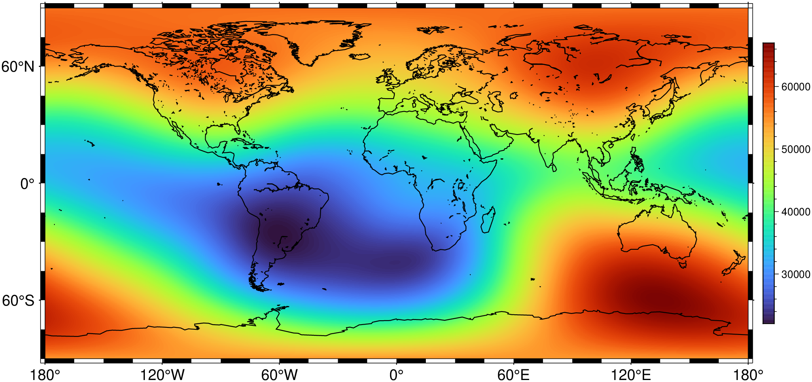

using GMT
G = magref(R=:d, onetime=2025);
viz(G, coast=true, colorbar=true)
Evaluates the IGRF or the CM4 geomagnetic models at the specified locations and times.
A note about the CM4 validity domain. The core field of CM4 is valid from 1960-2002.5 but the ionospheric and magnetospheric fields are computed after the Dst and F10.7 coefficient files. We extended here those coefficient files up to 2006, which means that one can compute external contributions up until 2006 but the Secular Variation will be biased (non reliable). New indices files may be retrieved from ftp://ftp.ngdc.noaa.gov/STP/GEOMAGNETIC_DATA/INDICES/DST/ (the Dst coefficients) and http://umbra.nascom.nasa.gov/sdb/yohkoh/ys_dbase/indices_flux_raw/Penticton_Absolute/monthly/MONTHPLT.ABS (The F10.7 index file is a MONTHPLT.ABS). Note: since the Dst files in the …/DST/ directory are still only up to 2006, for GMT4.5.3 and after we extended the Dst until August 2009 by reformatting the data in the preliminary file Est_Ist_index_0_mean.pli, which is at ftp://ftp.ngdc.noaa.gov/STP/GEOMAGNETIC_DATA/INDICES/EST_IST. But since this site is now also outdated, we get the DST indices from http://wdc.kugi.kyoto-u.ac.jp/dstae/index.html However, for the most recent dates those indices are “Quick Look” (the best are the “Definitive” type). Because the F10.7 from the MONTHPLT.ABS file mentioned above are apparently no being updated, we found another place where they are, which is: ftp://ftp.ngdc.noaa.gov/STP/space-weather/solar-data/solar-features/solar-radio/noontime-flux/penticton/penticton_absolute/listings/listing_drao_noontime-flux-absolute_monthly.txt
Another update in January 2025. The NASA site above no longer updated its data and now we use F10.7 data downloaded from https://celestrak.org/spacedata/SW-All.csv (Matlab refences this site as well). But it contains only daily data. Hence we computed the montly averages. However, comparing previous and computed averages from this site show some differences. For example the first 4 months of 2018 (replaced to in this update) compare like this: [609 632 608 634] (nasa) vs [699 725 683 700] (celestrak).
None.
input
Contains the moments in space-time where we want to evaluate the magnetic reference field. The first two columns must contain longitude and latitude (however, see yx for latitude and longitude instead). Normally, the third and fourth columns must contain altitude (in km) and time, respectively, but if one or both of these are constant for all records they can be supplied via the adjust option instead and are thus not expected in the input file. The alternative to provide the x,y locations is to use the region and (when grids are not global) the inc options. With them we get the results in a grid form. It requires setting time and altitude via the adjust option.
A or adjust : – input_params=(alt|altitude=true, onetime=true, yeardec=true)
Adjusts how the input record is interpreted. Use alt=true to set a fixed altitude (in km) that should apply to all data records [Default expects altitude to be in the 3rd column of all records]. Use onetime=true to set a fixed time that should apply to all data records [Default expects time to be in the 4th column of all records]. Finally, use yeardec=true to indicate that all times are specified as decimal years [Default is ISO date_T_colck format, see TIME_EPOCH].
NOTE: This basically only applies when passing data via a file, where we have no chance to know if time was passed as decimar years or as a DateTime string. When passing data directly in numeric form, we try to guess all this for you. So, for example, you can do magref([-28 38 0 "2001-05-01T12:00:00"], internal=...) or magref([-28 38 0 2001.330137], ...) and we do the guessings. If input has only two columns, we assume an altitude of zero and current time.
C or cm4file : – cm4file=file
Specify an alternate CM4 coefficient file [umdl.CM4].
D or dstfile : – dstfile=file Specify an alternate file with hourly means of the Dst index for CM4 [Dst_all.wdc]. Alternatively, simply specify a single index to apply for all records.
E or f107file : – f107file=file Specify an alternate file with monthly means of absolute F10.7 solar radio flux for CM4 [F107_mon.plt]. Alternatively, specify a single flux to apply for all records.
F or internal : – internal=flags | internal=(all_input=true, total|T=true, horizontal|H=true, X=true, Y=true, Z=true, dec|declination=true, inc|inclination=true, IGRF=true, CM4core=true, CM4litho=true, CM4mag_p=true, CM4mag_i=true, CM4iono_p=true, CM4iono_i=true, CM4toroid=true, IGRG_CM4=true)
Selects output items; Use, in alternative, the expanded form or the flags string made up of one or more of these characters:
Using several of the fiels contribution options (or appending several numbers (1-7)) will add up the different contributions. For example internal=(total=true, CM4core=true, CM4litho=true) (or internal=t/12) computes the total field due to Core and Lithospheric sources. The special case, that mixes Core field from IGRF and other sources from CM4, internal=t/934 computes Core field due to IGRF plus terms 3 and 4 from CM4 (but you can add others). This case is very important to be able to continue to use the CM4 model outside of its original time validity limits. The data is written out in the order they appear in flags [Default is F=rthxyzdi/1].
G or geocentric : – geocentric=true
Specifies that coordinates are geocentric [geodetic].
I or inc or increment or spacing : – inc=x_inc | inc=(x_inc, y_inc) | inc=“xinc[+e|n][/yinc[+e|n]]”
Specify the grid increments or the block sizes. More at [spacing](../common_opts/opt_I.html)
L or external : – external=(all_input=true, total|T=true, X=true, Y=true, Z=true, mag_i=true, iono_p=true, iono_i=true, poloidal=true)
Computes J field vectors from certain external sources.
R or region or limits : – limits=(xmin, xmax, ymin, ymax) | limits=(BB=(xmin, xmax, ymin, ymax),) | limits=(LLUR=(xmin, xmax, ymin, ymax),units=“unit”) | …more
Specify the region of interest. More at [limits](../common_opts/opt_R.html). For perspective view view, optionally add zmin,zmax. This option may be used to indicate the range used for the 3-D axes. You may ask for a larger w/e/s/n region to have more room between the image and the axes.
Sc or core_coef : – core_coef=(low,high)
Limits the wavelengths of the core field contribution to the band indicated by the low and high spherical harmonic order [1/13].
Sl or litho_coef : – litho_coef=(low,high)
Limits the wavelengths of the lithosphere field contribution to the band indicated by the low and high spherical harmonic order [14/65].
V or verbose : – verbose=true | verbose=level
Select verbosity level. More at [verbose](../common_opts/opt_V.html)
bi or binary_in : – binary_in=??
Select native binary format for primary table input. More at
h or header : – header=??
Specify that input and/or output file(s) have n header records. More at
o or outcol : – outcol=??
Select specific data columns for primary output, in arbitrary order. More at
yx : – yx=true
Swap 1st and 2nd column on input and/or output. More at
If binary input files are used then absolute time are stored as time relative to the selected epoch. However, since the epoch used is not stored in the data files there can be problems decoding the correct time. The mgd77 supplement uses the Unix time system as its default; thus you should make sure that binary data files with time uses the same system (see the GMT default TIME_SYSTEM).
To get the CM4 Total field, Declination and Inclination due to all but lithospheric and toroidal field at a one point location and decimal time 2000.0, do
To do the same as above but at noon (Universal Time) of first May 2001, try (note, we now use the condensed form of specifying the field components):
And to see the IGRF field at 2025.0. Since we are not specifying the grid increments (inc) it will assume a inc=0.25 degrees.
[mgd77track]
Comprehensive Modeling of the Geomagnetic Field, see https://doi.org/10.1111/j.1365-246X.2004.02421.x
The International Geomagnetic Reference Field (IGRF), see https://www.ngdc.noaa.gov/IAGA/vmod/igrf.html